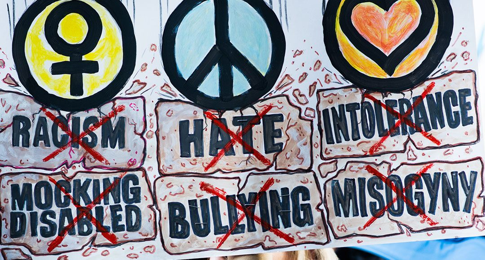
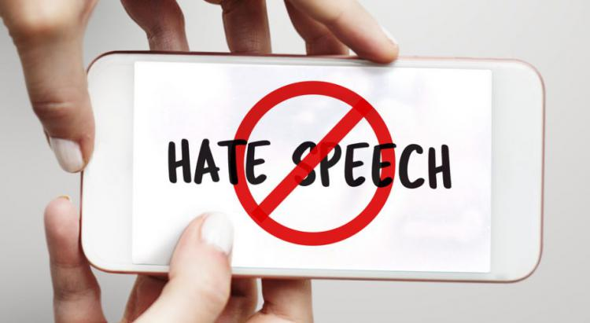

They spewed hate.
Then they punctuated it with the president’s name.

It was the day after the 2016 presidential election.
Melissa Johnson was walking out of a Trader Joe’s in the heart of San Diego when a shiny
BMW pulled up alongside her. The driver was a man in his late 30s. Dark hair. Green eyes.
Her first thought: He’s kind of hot.
The car slowed down.
Then the man shouted at her through the open window.
“Fuck you, nigger, go back to Africa. The slave ship is loading up,” he said.
Then he added an exclamation point: “Trump!”
As the man drove away, Johnson, looked around at the shoppers who
had witnessed the attack. She was the only African American in the parking lot. Not one
person met her eye. Nobody said anything. So the 37-year-old walked, stunned,
to her car, where she sat and wept.
Nearly every metric of intolerance in the US has surged over the past 18 months, from reported anti-Semitism and
Islamophobia to violent hate crimes based on skin color, nationality or sexual orientation.
This renaissance of hate features something new: xenophobic, racist and homophobic attacks punctuated with
President Donald Trump’s name. To understand the scope of the phenomenon, Reveal from The Center for
Investigative Reporting identified more than 150 reports of Trump-themed taunts and attacks stretching across 39
states over the past year and a half.
Interviews with the targets of and witnesses to these incidents showed a striking pattern. The abusers had a
clear message: Trump’s going to take care of a problem — and that problem is you.
This pattern extended across races, religions and sexual orientation. a Jewish woman in Austin,
By March,
a black woman in Houston reported that she was told by a white man that Trump was going to “Son of bitch.. get
rid of all you niggers.”

Immediately after the election, there was a surge in Trump-related taunts. But all last year and into this year,
the threats kept coming: An Asian American woman in Hollywood, California, had her hair pulled by an older white
woman and was told that she had to “go back to China” now that Trump is president. In the Washington, D.C.,
area, the Trump-tainted threats got so frequent and so bad that Mohammad Qureshi, a Muslim American man who
works at the Dulles Airport Marriott, changed his nametag to John.
These interviews reveal the trickle-down effect of a president who has called Mexicans rapists, proposed barring
Muslims from entering the country and denigrated certain nations as “shithole countries.” Sometimes the
perpetrators quoted the president’s words nearly verbatim. Other times, they signaled that as far as they’re
concerned, the country has changed in their favor now that Trump is in charge.
For most of those targeted, it wasn’t the first time they have heard hateful speech. But dozens of people
interviewed for this story said we’ve entered a new era of hate — one of open, blatant shouts, not whispers. And
now that hate features a presidential seal of approval.
Racism in America used to be more subtle, Johnson said. As she shopped for dresses and handbags at Nordstrom,
she said the security guards would follow her. The old lady in the elevator would clutch her Louis Vuitton bag a
little tighter in the enclosed space — never mind that Johnson has five of those bags herself. Neighbors
discouraged their son from dating her.